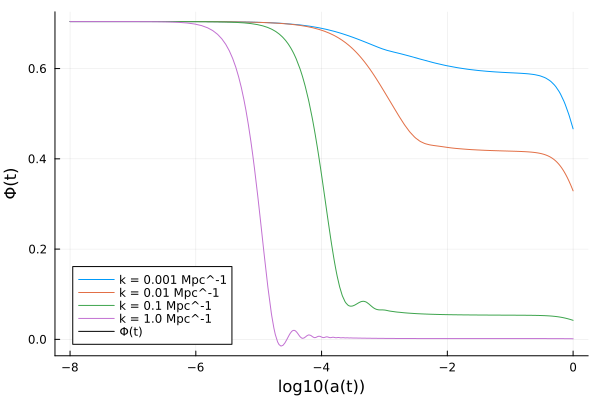
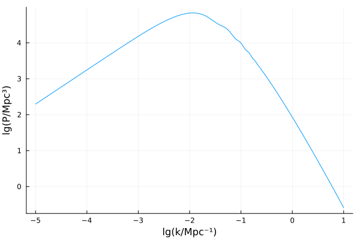
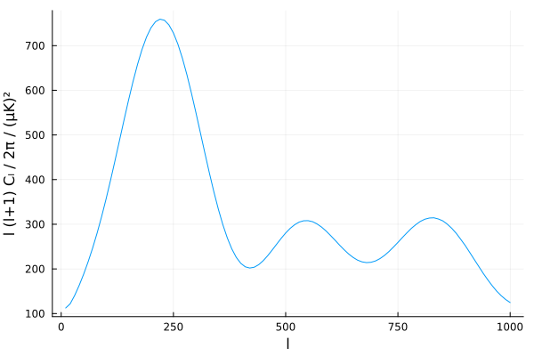
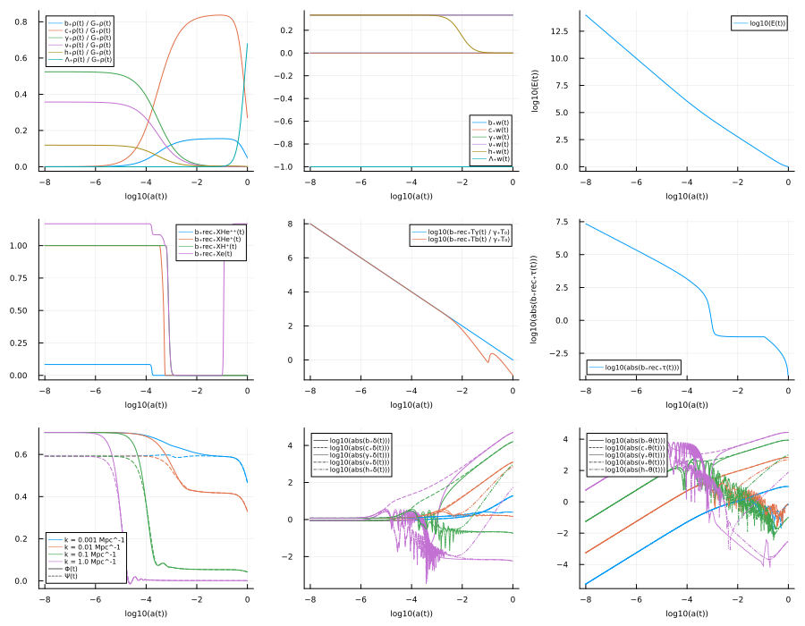

Getting started
Install SymBoltz.jl and load it with
using SymBoltz1. Create the model
The first step is to define our cosmological model. This is a symbolic representation of the variables and equations that describe the various components in the universe, such as the theory of gravity (like general relativity) and particle species (like the cosmological constant, cold dark matter, photons and baryons).
To get started, we will simply load the standard ΛCDM model:
M = ΛCDM(K = nothing) # flat\[ \begin{align*} \mathtt{G.\rho}\left( t \right) &= \mathtt{h.\rho}\left( t \right) + \mathtt{c.\rho}\left( t \right) + \mathtt{b.\rho}\left( t \right) + \mathtt{\gamma.\rho}\left( t \right) + \mathtt{\Lambda.\rho}\left( t \right) + \mathtt{\nu.\rho}\left( t \right) \\ \mathtt{G.P}\left( t \right) &= \mathtt{b.P}\left( t \right) + \mathtt{c.P}\left( t \right) + \mathtt{h.P}\left( t \right) + \mathtt{\gamma.P}\left( t \right) + \mathtt{\nu.P}\left( t \right) + \mathtt{\Lambda.P}\left( t \right) \\ \mathtt{b.rec.{\rho}b}\left( t \right) &= 1.5736 \cdot 10^{-25} h^{2} \mathtt{b.\rho}\left( t \right) \\ \mathtt{b.rec.T\gamma}\left( t \right) &= \mathtt{\gamma.T}\left( t \right) \\ \mathtt{f\nu}\left( t \right) &= \frac{\mathtt{h.\rho}\left( t \right) + \mathtt{\nu.\rho}\left( t \right)}{\mathtt{h.\rho}\left( t \right) + \mathtt{\gamma.\rho}\left( t \right) + \mathtt{\nu.\rho}\left( t \right)} \\ \mathtt{G.\delta\rho}\left( t \right) \epsilon &= \left( \mathtt{h.\rho}\left( t \right) \mathtt{h.\delta}\left( t \right) + \mathtt{c.\rho}\left( t \right) \mathtt{c.\delta}\left( t \right) + \mathtt{\gamma.\delta}\left( t \right) \mathtt{\gamma.\rho}\left( t \right) + \mathtt{\nu.\delta}\left( t \right) \mathtt{\nu.\rho}\left( t \right) + \mathtt{b.\rho}\left( t \right) \mathtt{b.\delta}\left( t \right) + \mathtt{\Lambda.\rho}\left( t \right) \mathtt{\Lambda.\delta}\left( t \right) \right) \epsilon \\ \mathtt{G.{\delta}P}\left( t \right) \epsilon &= \left( \mathtt{h.\rho}\left( t \right) \mathtt{h.\delta}\left( t \right) \mathtt{h.c_s^2}\left( t \right) + \mathtt{c.\rho}\left( t \right) \mathtt{c.c_s^2}\left( t \right) \mathtt{c.\delta}\left( t \right) + \mathtt{\gamma.\delta}\left( t \right) \mathtt{\gamma.c_s^2}\left( t \right) \mathtt{\gamma.\rho}\left( t \right) + \mathtt{\nu.c_s^2}\left( t \right) \mathtt{\nu.\delta}\left( t \right) \mathtt{\nu.\rho}\left( t \right) + \mathtt{\Lambda.c_s^2}\left( t \right) \mathtt{\Lambda.\rho}\left( t \right) \mathtt{\Lambda.\delta}\left( t \right) + \mathtt{b.c_s^2}\left( t \right) \mathtt{b.\rho}\left( t \right) \mathtt{b.\delta}\left( t \right) \right) \epsilon \\ \mathtt{G.\Pi}\left( t \right) \epsilon &= \left( \left( \mathtt{h.\rho}\left( t \right) + \mathtt{h.P}\left( t \right) \right) \mathtt{h.\sigma}\left( t \right) + \left( \mathtt{b.P}\left( t \right) + \mathtt{b.\rho}\left( t \right) \right) \mathtt{b.\sigma}\left( t \right) + \left( \mathtt{c.\rho}\left( t \right) + \mathtt{c.P}\left( t \right) \right) \mathtt{c.\sigma}\left( t \right) + \left( \mathtt{\gamma.\rho}\left( t \right) + \mathtt{\gamma.P}\left( t \right) \right) \mathtt{\gamma.\sigma}\left( t \right) + \left( \mathtt{\Lambda.\rho}\left( t \right) + \mathtt{\Lambda.P}\left( t \right) \right) \mathtt{\Lambda.\sigma}\left( t \right) + \left( \mathtt{\nu.\rho}\left( t \right) + \mathtt{\nu.P}\left( t \right) \right) \mathtt{\nu.\sigma}\left( t \right) \right) \epsilon \\ \mathtt{b.{\theta}interaction}\left( t \right) \epsilon &= \frac{ - 4 \left( \mathtt{\gamma.\theta}\left( t \right) - \mathtt{b.\theta}\left( t \right) \right) \mathtt{\gamma.\rho}\left( t \right) \mathtt{b.rec.\dot{\tau}}\left( t \right) \epsilon}{3 \mathtt{b.\rho}\left( t \right)} \\ \mathtt{\gamma.\dot{\tau}}\left( t \right) \epsilon &= \mathtt{b.rec.\dot{\tau}}\left( t \right) \epsilon \\ \mathtt{\gamma.{\theta}b}\left( t \right) \epsilon &= \mathtt{b.\theta}\left( t \right) \epsilon \\ \mathtt{S\_SW}\left( t \right) \epsilon &= \left( \frac{1}{4} \mathtt{\gamma.\delta}\left( t \right) + \Psi\left( t \right) \right) \mathtt{b.rec.v}\left( t \right) \epsilon \\ \mathtt{S\_ISW}\left( t \right) \epsilon &= \frac{\mathrm{d}}{\mathrm{d}t} \left( \Psi\left( t \right) + \Phi\left( t \right) \right) e^{ - \mathtt{b.rec.\tau}\left( t \right)} \epsilon \\ \mathtt{S\_Dop}\left( t \right) \epsilon &= \frac{\left( \mathtt{b.rec.\dot{v}}\left( t \right) \mathtt{b.u}\left( t \right) + \mathtt{b.rec.v}\left( t \right) \frac{\mathrm{d} \mathtt{b.u}\left( t \right)}{\mathrm{d}t} \right) \epsilon}{k} \\ \mathtt{S\_pol}\left( t \right) \epsilon &= \frac{3 \left( \mathtt{b.rec.\textnormal{\"{v}}}\left( t \right) \mathtt{G.\Pi}\left( t \right) + 2 \mathtt{b.rec.\dot{v}}\left( t \right) \frac{\mathrm{d} \mathtt{\gamma.\Pi}\left( t \right)}{\mathrm{d}t} \right) \epsilon}{4 k^{2}} \\ S\left( t \right) \epsilon &= \left( \mathtt{S\_Dop}\left( t \right) + \mathtt{S\_ISW}\left( t \right) + \mathtt{S\_SW}\left( t \right) \right) \epsilon \\ z\left( t \right) &= -1 + \frac{1}{a\left( t \right)} \\ \mathscr{E}\left( t \right) &= \frac{\frac{\mathrm{d} a\left( t \right)}{\mathrm{d}t}}{a\left( t \right)} \\ E\left( t \right) &= \frac{\mathscr{E}\left( t \right)}{a\left( t \right)} \\ \mathscr{H}\left( t \right) &= 3.2408 \cdot 10^{-18} h \mathscr{E}\left( t \right) \\ H\left( t \right) &= 3.2408 \cdot 10^{-18} h E\left( t \right) \\ \mathtt{g_{1 1}}\left( t \right) &= \left( a\left( t \right) \right)^{2} \left( -1 - 2 \Psi\left( t \right) \epsilon \right) \\ \mathtt{g_{2 2}}\left( t \right) &= \left( a\left( t \right) \right)^{2} \left( 1 - 2 \Phi\left( t \right) \epsilon \right) \\ \frac{\mathrm{d} a\left( t \right)}{\mathrm{d}t} &= \sqrt{\frac{8}{3} \left( a\left( t \right) \right)^{4} \mathtt{G.\rho}\left( t \right) \pi} \\ \mathtt{G.\Delta}\left( t \right) &= \frac{ - \left( \frac{\mathrm{d} a\left( t \right)}{\mathrm{d}t} \right)^{2} \left( 1 + \frac{ - 3 \mathtt{G.P}\left( t \right)}{\mathtt{G.\rho}\left( t \right)} \right)}{2 a\left( t \right)} + \frac{\mathrm{d}}{\mathrm{d}t} \frac{\mathrm{d} a\left( t \right)}{\mathrm{d}t} \\ \frac{\mathrm{d} \Phi\left( t \right)}{\mathrm{d}t} \epsilon &= \left( \frac{ - k^{2} \Phi\left( t \right)}{3 \mathscr{E}\left( t \right)} + \frac{ - \frac{4}{3} \left( a\left( t \right) \right)^{2} \mathtt{G.\delta\rho}\left( t \right) \pi}{\mathscr{E}\left( t \right)} - \mathscr{E}\left( t \right) \Psi\left( t \right) \right) \epsilon \\ k^{2} \left( - \Psi\left( t \right) + \Phi\left( t \right) \right) \epsilon &= 12 \left( a\left( t \right) \right)^{2} \mathtt{G.\Pi}\left( t \right) \pi \epsilon \\ \frac{\mathrm{d} \mathtt{\gamma.F}\left( t \right)_{0}}{\mathrm{d}t} \epsilon &= \left( 4 \frac{\mathrm{d} \Phi\left( t \right)}{\mathrm{d}t} - k \mathtt{\gamma.F}\left( t \right)_{1} \right) \epsilon \\ \frac{\mathrm{d} \mathtt{\gamma.F}\left( t \right)_{1}}{\mathrm{d}t} \epsilon &= \left( \frac{ - \frac{4}{3} \left( \mathtt{\gamma.{\theta}b}\left( t \right) - \mathtt{\gamma.\theta}\left( t \right) \right) \mathtt{\gamma.\dot{\tau}}\left( t \right)}{k} + \frac{1}{3} k \left( 4 \Psi\left( t \right) + \mathtt{\gamma.F}\left( t \right)_{0} - 2 \mathtt{\gamma.F}\left( t \right)_{2} \right) \right) \epsilon \\ \frac{\mathrm{d} \mathtt{\gamma.F}\left( t \right)_{2}}{\mathrm{d}t} \epsilon &= \left( \frac{1}{5} k \left( 2 \mathtt{\gamma.F}\left( t \right)_{1} - 3 \mathtt{\gamma.F}\left( t \right)_{3} \right) + \frac{9}{10} \mathtt{\gamma.\dot{\tau}}\left( t \right) \mathtt{\gamma.F}\left( t \right)_{2} - \frac{1}{10} \mathtt{\gamma.\dot{\tau}}\left( t \right) \left( \mathtt{\gamma.G}\left( t \right)_{0} + \mathtt{\gamma.G}\left( t \right)_{2} \right) \right) \epsilon \\ \frac{\mathrm{d} \mathtt{\gamma.F}\left( t \right)_{3}}{\mathrm{d}t} \epsilon &= \left( \frac{1}{7} k \left( 3 \mathtt{\gamma.F}\left( t \right)_{2} - 4 \mathtt{\gamma.F}\left( t \right)_{4} \right) + \mathtt{\gamma.\dot{\tau}}\left( t \right) \mathtt{\gamma.F}\left( t \right)_{3} \right) \epsilon \\ \frac{\mathrm{d} \mathtt{\gamma.F}\left( t \right)_{4}}{\mathrm{d}t} \epsilon &= \left( \frac{1}{9} k \left( 4 \mathtt{\gamma.F}\left( t \right)_{3} - 5 \mathtt{\gamma.F}\left( t \right)_{5} \right) + \mathtt{\gamma.\dot{\tau}}\left( t \right) \mathtt{\gamma.F}\left( t \right)_{4} \right) \epsilon \\ \frac{\mathrm{d} \mathtt{\gamma.F}\left( t \right)_{5}}{\mathrm{d}t} \epsilon &= \left( \frac{1}{11} k \left( 5 \mathtt{\gamma.F}\left( t \right)_{4} - 6 \mathtt{\gamma.F}\left( t \right)_{6} \right) + \mathtt{\gamma.\dot{\tau}}\left( t \right) \mathtt{\gamma.F}\left( t \right)_{5} \right) \epsilon \\ \frac{\mathrm{d} \mathtt{\gamma.F}\left( t \right)_{6}}{\mathrm{d}t} \epsilon &= \left( k \mathtt{\gamma.F}\left( t \right)_{5} - 7 \mathscr{E}\left( t \right) \mathtt{\gamma.F}\left( t \right)_{6} + \mathtt{\gamma.\dot{\tau}}\left( t \right) \mathtt{\gamma.F}\left( t \right)_{6} \right) \epsilon \\ \mathtt{\gamma.\delta}\left( t \right) \epsilon &= \mathtt{\gamma.F}\left( t \right)_{0} \epsilon \\ \mathtt{\gamma.\theta}\left( t \right) \epsilon &= \frac{3}{4} k \mathtt{\gamma.F}\left( t \right)_{1} \epsilon \\ \mathtt{\gamma.\sigma}\left( t \right) \epsilon &= \frac{1}{2} \mathtt{\gamma.F}\left( t \right)_{2} \epsilon \\ \mathtt{\gamma.\Pi}\left( t \right) \epsilon &= \left( \mathtt{\gamma.F}\left( t \right)_{2} + \mathtt{\gamma.G}\left( t \right)_{0} + \mathtt{\gamma.G}\left( t \right)_{2} \right) \epsilon \\ \mathtt{\gamma.\dot{\Pi}}\left( t \right) \epsilon &= \frac{\mathrm{d} \mathtt{\gamma.\Pi}\left( t \right)}{\mathrm{d}t} \epsilon \\ \mathtt{\gamma.c_s^2}\left( t \right) \epsilon &= \frac{1}{3} \epsilon \\ \mathtt{\gamma.\Theta}\left( t \right)_{0} \epsilon &= \frac{1}{4} \mathtt{\gamma.F}\left( t \right)_{0} \epsilon \\ \mathtt{\gamma.\Theta}\left( t \right)_{1} \epsilon &= \frac{1}{4} \mathtt{\gamma.F}\left( t \right)_{1} \epsilon \\ \mathtt{\gamma.\Theta}\left( t \right)_{2} \epsilon &= \frac{1}{4} \mathtt{\gamma.F}\left( t \right)_{2} \epsilon \\ \mathtt{\gamma.\Theta}\left( t \right)_{3} \epsilon &= \frac{1}{4} \mathtt{\gamma.F}\left( t \right)_{3} \epsilon \\ \mathtt{\gamma.\Theta}\left( t \right)_{4} \epsilon &= \frac{1}{4} \mathtt{\gamma.F}\left( t \right)_{4} \epsilon \\ \mathtt{\gamma.\Theta}\left( t \right)_{5} \epsilon &= \frac{1}{4} \mathtt{\gamma.F}\left( t \right)_{5} \epsilon \\ \mathtt{\gamma.\Theta}\left( t \right)_{6} \epsilon &= \frac{1}{4} \mathtt{\gamma.F}\left( t \right)_{6} \epsilon \\ \frac{\mathrm{d} \mathtt{\gamma.G}\left( t \right)_{0}}{\mathrm{d}t} \epsilon &= \left( - k \mathtt{\gamma.G}\left( t \right)_{1} + \left( - \frac{1}{2} \mathtt{\gamma.\Pi}\left( t \right) + \mathtt{\gamma.G}\left( t \right)_{0} \right) \mathtt{\gamma.\dot{\tau}}\left( t \right) \right) \epsilon \\ \frac{\mathrm{d} \mathtt{\gamma.G}\left( t \right)_{1}}{\mathrm{d}t} \epsilon &= \left( \frac{1}{3} k \left( \mathtt{\gamma.G}\left( t \right)_{0} - 2 \mathtt{\gamma.G}\left( t \right)_{2} \right) + \mathtt{\gamma.\dot{\tau}}\left( t \right) \mathtt{\gamma.G}\left( t \right)_{1} \right) \epsilon \\ \frac{\mathrm{d} \mathtt{\gamma.G}\left( t \right)_{2}}{\mathrm{d}t} \epsilon &= \left( \frac{1}{5} k \left( 2 \mathtt{\gamma.G}\left( t \right)_{1} - 3 \mathtt{\gamma.G}\left( t \right)_{3} \right) + \left( - \frac{1}{10} \mathtt{\gamma.\Pi}\left( t \right) + \mathtt{\gamma.G}\left( t \right)_{2} \right) \mathtt{\gamma.\dot{\tau}}\left( t \right) \right) \epsilon \\ \frac{\mathrm{d} \mathtt{\gamma.G}\left( t \right)_{3}}{\mathrm{d}t} \epsilon &= \left( \frac{1}{7} k \left( 3 \mathtt{\gamma.G}\left( t \right)_{2} - 4 \mathtt{\gamma.G}\left( t \right)_{4} \right) + \mathtt{\gamma.\dot{\tau}}\left( t \right) \mathtt{\gamma.G}\left( t \right)_{3} \right) \epsilon \\ \frac{\mathrm{d} \mathtt{\gamma.G}\left( t \right)_{4}}{\mathrm{d}t} \epsilon &= \left( \frac{1}{9} k \left( 4 \mathtt{\gamma.G}\left( t \right)_{3} - 5 \mathtt{\gamma.G}\left( t \right)_{5} \right) + \mathtt{\gamma.\dot{\tau}}\left( t \right) \mathtt{\gamma.G}\left( t \right)_{4} \right) \epsilon \\ \frac{\mathrm{d} \mathtt{\gamma.G}\left( t \right)_{5}}{\mathrm{d}t} \epsilon &= \left( \frac{1}{11} k \left( 5 \mathtt{\gamma.G}\left( t \right)_{4} - 6 \mathtt{\gamma.G}\left( t \right)_{6} \right) + \mathtt{\gamma.\dot{\tau}}\left( t \right) \mathtt{\gamma.G}\left( t \right)_{5} \right) \epsilon \\ \frac{\mathrm{d} \mathtt{\gamma.G}\left( t \right)_{6}}{\mathrm{d}t} \epsilon &= \left( k \mathtt{\gamma.G}\left( t \right)_{5} - 7 \mathscr{E}\left( t \right) \mathtt{\gamma.G}\left( t \right)_{6} + \mathtt{\gamma.\dot{\tau}}\left( t \right) \mathtt{\gamma.G}\left( t \right)_{6} \right) \epsilon \\ \mathtt{\gamma.T}\left( t \right) &= \frac{\mathtt{\gamma.T{_0}}}{a\left( t \right)} \\ \mathtt{\gamma.w}\left( t \right) &= \frac{1}{3} \\ \mathtt{\gamma.P}\left( t \right) &= \mathtt{\gamma.\rho}\left( t \right) \mathtt{\gamma.w}\left( t \right) \\ \mathtt{\gamma.\rho}\left( t \right) &= 0.11937 \left( a\left( t \right) \right)^{ - 3 \left( 1 + \mathtt{\gamma.w}\left( t \right) \right)} \mathtt{\gamma.\Omega_0} \\ \mathtt{\gamma.\Omega}\left( t \right) &= 8.3776 \mathtt{\gamma.\rho}\left( t \right) \\ \frac{\mathrm{d} \mathtt{\nu.F}\left( t \right)_{0}}{\mathrm{d}t} \epsilon &= \left( 4 \frac{\mathrm{d} \Phi\left( t \right)}{\mathrm{d}t} - k \mathtt{\nu.F}\left( t \right)_{1} \right) \epsilon \\ \frac{\mathrm{d} \mathtt{\nu.F}\left( t \right)_{1}}{\mathrm{d}t} \epsilon &= \frac{1}{3} k \left( 4 \Psi\left( t \right) + \mathtt{\nu.F}\left( t \right)_{0} - 2 \mathtt{\nu.F}\left( t \right)_{2} \right) \epsilon \\ \frac{\mathrm{d} \mathtt{\nu.F}\left( t \right)_{2}}{\mathrm{d}t} \epsilon &= \frac{1}{5} k \left( 2 \mathtt{\nu.F}\left( t \right)_{1} - 3 \mathtt{\nu.F}\left( t \right)_{3} \right) \epsilon \\ \frac{\mathrm{d} \mathtt{\nu.F}\left( t \right)_{3}}{\mathrm{d}t} \epsilon &= \frac{1}{7} k \left( 3 \mathtt{\nu.F}\left( t \right)_{2} - 4 \mathtt{\nu.F}\left( t \right)_{4} \right) \epsilon \\ \frac{\mathrm{d} \mathtt{\nu.F}\left( t \right)_{4}}{\mathrm{d}t} \epsilon &= \frac{1}{9} k \left( 4 \mathtt{\nu.F}\left( t \right)_{3} - 5 \mathtt{\nu.F}\left( t \right)_{5} \right) \epsilon \\ \frac{\mathrm{d} \mathtt{\nu.F}\left( t \right)_{5}}{\mathrm{d}t} \epsilon &= \frac{1}{11} k \left( 5 \mathtt{\nu.F}\left( t \right)_{4} - 6 \mathtt{\nu.F}\left( t \right)_{6} \right) \epsilon \\ \frac{\mathrm{d} \mathtt{\nu.F}\left( t \right)_{6}}{\mathrm{d}t} \epsilon &= \left( k \mathtt{\nu.F}\left( t \right)_{5} - 7 \mathscr{E}\left( t \right) \mathtt{\nu.F}\left( t \right)_{6} \right) \epsilon \\ \mathtt{\nu.\delta}\left( t \right) \epsilon &= \mathtt{\nu.F}\left( t \right)_{0} \epsilon \\ \mathtt{\nu.\theta}\left( t \right) \epsilon &= \frac{3}{4} k \mathtt{\nu.F}\left( t \right)_{1} \epsilon \\ \mathtt{\nu.\sigma}\left( t \right) \epsilon &= \frac{1}{2} \mathtt{\nu.F}\left( t \right)_{2} \epsilon \\ \mathtt{\nu.c_s^2}\left( t \right) \epsilon &= \frac{1}{3} \epsilon \\ \mathtt{\nu.T}\left( t \right) &= \frac{\mathtt{\nu.T{_0}}}{a\left( t \right)} \\ \mathtt{\nu.w}\left( t \right) &= \frac{1}{3} \\ \mathtt{\nu.P}\left( t \right) &= \mathtt{\nu.w}\left( t \right) \mathtt{\nu.\rho}\left( t \right) \\ \mathtt{\nu.\rho}\left( t \right) &= 0.11937 \left( a\left( t \right) \right)^{ - 3 \left( 1 + \mathtt{\nu.w}\left( t \right) \right)} \mathtt{\nu.\Omega_0} \\ \mathtt{\nu.\Omega}\left( t \right) &= 8.3776 \mathtt{\nu.\rho}\left( t \right) \\ \mathtt{c.c_s^2}\left( t \right) \epsilon &= 0 \\ \mathtt{c.w}\left( t \right) &= 0 \\ \mathtt{c.P}\left( t \right) &= \mathtt{c.\rho}\left( t \right) \mathtt{c.w}\left( t \right) \\ \mathtt{c.\rho}\left( t \right) &= \frac{3 \left( a\left( t \right) \right)^{ - 3 \left( 1 + \mathtt{c.w}\left( t \right) \right)} \mathtt{c.\Omega_0}}{8 \pi} \\ \mathtt{c.\Omega}\left( t \right) &= \frac{8}{3} \mathtt{c.\rho}\left( t \right) \pi \\ \frac{\mathrm{d} \mathtt{c.\delta}\left( t \right)}{\mathrm{d}t} \epsilon &= \left( \left( -1 - \mathtt{c.w}\left( t \right) \right) \left( \mathtt{c.\theta}\left( t \right) - 3 \frac{\mathrm{d} \Phi\left( t \right)}{\mathrm{d}t} \right) - 3 \left( - \mathtt{c.w}\left( t \right) + \mathtt{c.c_s^2}\left( t \right) \right) \mathscr{E}\left( t \right) \mathtt{c.\delta}\left( t \right) \right) \epsilon \\ \frac{\mathrm{d} \mathtt{c.\theta}\left( t \right)}{\mathrm{d}t} \epsilon &= \left( \frac{k^{2} \mathtt{c.c_s^2}\left( t \right) \mathtt{c.\delta}\left( t \right)}{1 + \mathtt{c.w}\left( t \right)} + \mathtt{c.{\theta}interaction}\left( t \right) + k^{2} \Psi\left( t \right) - k^{2} \mathtt{c.\sigma}\left( t \right) - \left( 1 - 3 \mathtt{c.w}\left( t \right) \right) \mathscr{E}\left( t \right) \mathtt{c.\theta}\left( t \right) \right) \epsilon \\ \mathtt{c.u}\left( t \right) \epsilon &= \frac{\mathtt{c.\theta}\left( t \right) \epsilon}{k} \\ \mathtt{c.\dot{u}}\left( t \right) \epsilon &= \frac{\mathrm{d} \mathtt{c.u}\left( t \right)}{\mathrm{d}t} \epsilon \\ \mathtt{c.\Delta}\left( t \right) \epsilon &= \left( \mathtt{c.\delta}\left( t \right) + \frac{3 \left( 1 + \mathtt{c.w}\left( t \right) \right) \mathscr{E}\left( t \right)}{\mathtt{c.\theta}\left( t \right)} \right) \epsilon \\ \mathtt{c.\sigma}\left( t \right) \epsilon &= 0 \\ \mathtt{c.{\theta}interaction}\left( t \right) \epsilon &= 0 \\ \mathtt{b.c_s^2}\left( t \right) \epsilon &= \mathtt{b.rec.c_s^2}\left( t \right) \epsilon \\ \mathtt{b.w}\left( t \right) &= 0 \\ \mathtt{b.P}\left( t \right) &= \mathtt{b.\rho}\left( t \right) \mathtt{b.w}\left( t \right) \\ \mathtt{b.\rho}\left( t \right) &= \frac{3 \left( a\left( t \right) \right)^{ - 3 \left( 1 + \mathtt{b.w}\left( t \right) \right)} \mathtt{b.\Omega_0}}{8 \pi} \\ \mathtt{b.\Omega}\left( t \right) &= \frac{8}{3} \mathtt{b.\rho}\left( t \right) \pi \\ \frac{\mathrm{d} \mathtt{b.\delta}\left( t \right)}{\mathrm{d}t} \epsilon &= \left( \left( -1 - \mathtt{b.w}\left( t \right) \right) \left( \mathtt{b.\theta}\left( t \right) - 3 \frac{\mathrm{d} \Phi\left( t \right)}{\mathrm{d}t} \right) - 3 \mathscr{E}\left( t \right) \left( \mathtt{b.c_s^2}\left( t \right) - \mathtt{b.w}\left( t \right) \right) \mathtt{b.\delta}\left( t \right) \right) \epsilon \\ \frac{\mathrm{d} \mathtt{b.\theta}\left( t \right)}{\mathrm{d}t} \epsilon &= \left( \frac{k^{2} \mathtt{b.c_s^2}\left( t \right) \mathtt{b.\delta}\left( t \right)}{1 + \mathtt{b.w}\left( t \right)} + \mathtt{b.{\theta}interaction}\left( t \right) + k^{2} \Psi\left( t \right) - k^{2} \mathtt{b.\sigma}\left( t \right) - \mathscr{E}\left( t \right) \left( 1 - 3 \mathtt{b.w}\left( t \right) \right) \mathtt{b.\theta}\left( t \right) \right) \epsilon \\ \mathtt{b.u}\left( t \right) \epsilon &= \frac{\mathtt{b.\theta}\left( t \right) \epsilon}{k} \\ \mathtt{b.\dot{u}}\left( t \right) \epsilon &= \frac{\mathrm{d} \mathtt{b.u}\left( t \right)}{\mathrm{d}t} \epsilon \\ \mathtt{b.\Delta}\left( t \right) \epsilon &= \left( \mathtt{b.\delta}\left( t \right) + \frac{3 \mathscr{E}\left( t \right) \left( 1 + \mathtt{b.w}\left( t \right) \right)}{\mathtt{b.\theta}\left( t \right)} \right) \epsilon \\ \mathtt{b.\sigma}\left( t \right) \epsilon &= 0 \\ \mathtt{b.rec.nH}\left( t \right) &= 5.9743 \cdot 10^{26} \left( 1 - \mathtt{b.rec.Yp} \right) \mathtt{b.rec.{\rho}b}\left( t \right) \\ \mathtt{b.rec.nHe}\left( t \right) &= \mathtt{b.rec.fHe} \mathtt{b.rec.nH}\left( t \right) \\ \mathtt{b.rec.DTb}\left( t \right) &= \frac{ - 0.00015165 \left( \mathtt{b.rec.T\gamma}\left( t \right) \right)^{4} a\left( t \right) \mathtt{b.rec.Xe}\left( t \right) \mathtt{b.rec.{\Delta}T}\left( t \right)}{\left( 1 + \mathtt{b.rec.fHe} + \mathtt{b.rec.Xe}\left( t \right) \right) h} - 2 \mathscr{E}\left( t \right) \mathtt{b.rec.Tb}\left( t \right) \\ \mathtt{b.rec.DT\gamma}\left( t \right) &= \frac{\mathrm{d} \mathtt{b.rec.T\gamma}\left( t \right)}{\mathrm{d}t} \\ \frac{\mathrm{d} \mathtt{b.rec.{\Delta}T}\left( t \right)}{\mathrm{d}t} &= - \mathtt{b.rec.DT\gamma}\left( t \right) + \mathtt{b.rec.DTb}\left( t \right) \\ \mathtt{b.rec.Tb}\left( t \right) &= \mathtt{b.rec.T\gamma}\left( t \right) + \mathtt{b.rec.{\Delta}T}\left( t \right) \\ \mathtt{b.rec.{\beta}b}\left( t \right) &= \frac{1}{1.3806 \cdot 10^{-23} \mathtt{b.rec.Tb}\left( t \right)} \\ \mathtt{b.rec.{\lambda}e}\left( t \right) &= \frac{6.6261 \cdot 10^{-34}}{\sqrt{\frac{5.7236 \cdot 10^{-30}}{\mathtt{b.rec.{\beta}b}\left( t \right)}}} \\ \mathtt{b.rec.\mu}\left( t \right) &= \frac{1.6738 \cdot 10^{-27}}{1 - 0.74816 \mathtt{b.rec.Yp} + \left( 1 - \mathtt{b.rec.Yp} \right) \mathtt{b.rec.Xe}\left( t \right)} \\ \mathtt{b.rec.c_s^2}\left( t \right) &= \frac{1.3806 \cdot 10^{-23} \left( \frac{ - \frac{\mathrm{d} \mathtt{b.rec.Tb}\left( t \right)}{\mathrm{d}t}}{3 \mathscr{E}\left( t \right)} + \mathtt{b.rec.Tb}\left( t \right) \right)}{8.9876 \cdot 10^{16} \mathtt{b.rec.\mu}\left( t \right)} \\ \mathtt{b.rec.{\alpha}H}\left( t \right) &= \frac{4.9123 \cdot 10^{-19}}{0.0034166 \left( \mathtt{b.rec.Tb}\left( t \right) \right)^{0.6166} \left( 1 + 0.0050847 \left( \mathtt{b.rec.Tb}\left( t \right) \right)^{0.53} \right)} \\ \mathtt{b.rec.{\beta}H}\left( t \right) &= \frac{\mathtt{b.rec.{\alpha}H}\left( t \right) e^{ - 5.4468 \cdot 10^{-19} \mathtt{b.rec.{\beta}b}\left( t \right)}}{\left( \mathtt{b.rec.{\lambda}e}\left( t \right) \right)^{3}} \\ \mathtt{b.rec.KH0}\left( t \right) &= \frac{1.7966 \cdot 10^{-21}}{25.133 H\left( t \right)} \\ \mathtt{b.rec.KH1}\left( t \right) &= \left( - 0.14 e^{ - 30.864 \left( 7.28 + \log\left( a\left( t \right) \right) \right)^{2}} + 0.079 e^{ - 9.1827 \left( 6.73 + \log\left( a\left( t \right) \right) \right)^{2}} \right) \mathtt{b.rec.KH0}\left( t \right) \\ \mathtt{b.rec.KH}\left( t \right) &= \mathtt{b.rec.KH1}\left( t \right) + \mathtt{b.rec.KH0}\left( t \right) \\ \mathtt{b.rec.CH}\left( t \right) &= \frac{1 + 8.2246 \mathtt{b.rec.nH}\left( t \right) \mathtt{b.rec.KH}\left( t \right) \left( 1 - \mathtt{b.rec.XH^+}\left( t \right) \right)}{1 + \mathtt{b.rec.nH}\left( t \right) \left( 8.2246 + \mathtt{b.rec.{\beta}H}\left( t \right) \right) \mathtt{b.rec.KH}\left( t \right) \left( 1 - \mathtt{b.rec.XH^+}\left( t \right) \right)} \\ \frac{\mathrm{d} \mathtt{b.rec.XH^+}\left( t \right)}{\mathrm{d}t} &= \frac{\left( - \mathtt{b.rec.ne}\left( t \right) \mathtt{b.rec.{\alpha}H}\left( t \right) \mathtt{b.rec.XH^+}\left( t \right) - \mathtt{b.rec.{\beta}H}\left( t \right) \left( -1 + \mathtt{b.rec.XH^+}\left( t \right) \right) e^{ - 1.634 \cdot 10^{-18} \mathtt{b.rec.{\beta}b}\left( t \right)} \right) \mathtt{b.rec.CH}\left( t \right) a\left( t \right)}{3.2408 \cdot 10^{-18} h} \\ \mathtt{b.rec.{\alpha}He}\left( t \right) &= \frac{1.803 \cdot 10^{-17}}{\left( 1 + \sqrt{0.33333 \mathtt{b.rec.Tb}\left( t \right)} \right)^{0.289} \left( 1 + \sqrt{7.6913 \cdot 10^{-6} \mathtt{b.rec.Tb}\left( t \right)} \right)^{1.711} \sqrt{0.33333 \mathtt{b.rec.Tb}\left( t \right)}} \\ \mathtt{b.rec.{\beta}He}\left( t \right) &= \frac{4 \mathtt{b.rec.{\alpha}He}\left( t \right) e^{ - 6.3633 \cdot 10^{-19} \mathtt{b.rec.{\beta}b}\left( t \right)}}{\left( \mathtt{b.rec.{\lambda}e}\left( t \right) \right)^{3}} \\ \mathtt{b.rec.KHe0^{- 1}}\left( t \right) &= 1.2597 \cdot 10^{23} H\left( t \right) \\ \mathtt{b.rec.KHe1^{- 1}}\left( t \right) &= - \mathtt{b.rec.KHe0^{- 1}}\left( t \right) e^{\frac{ - 5.3949 \cdot 10^{9} \mathtt{b.rec.nHe}\left( t \right) \left( 1 - \mathtt{b.rec.XHe^+}\left( t \right) \right)}{\mathtt{b.rec.KHe0^{- 1}}\left( t \right)}} \\ \mathtt{b.rec.{\gamma}2Ps}\left( t \right) &= \left|\frac{4.8487 \cdot 10^{26} \mathtt{b.rec.fHe} \left( 1 - \mathtt{b.rec.XHe^+}\left( t \right) \right)}{4.8748 \cdot 10^{26} \sqrt{\frac{6.2832}{5.9736 \cdot 10^{-10} \mathtt{b.rec.{\beta}b}\left( t \right)}} \left( 1 - \mathtt{b.rec.XH^+}\left( t \right) \right)}\right| \\ \mathtt{b.rec.KHe2^{- 1}}\left( t \right) &= \frac{5.3949 \cdot 10^{9} \mathtt{b.rec.nHe}\left( t \right) \left( 1 - \mathtt{b.rec.XHe^+}\left( t \right) \right)}{1 + 0.36 \left( \mathtt{b.rec.{\gamma}2Ps}\left( t \right) \right)^{0.86}} \\ \mathtt{b.rec.KHe}\left( t \right) &= \frac{1}{\mathtt{b.rec.KHe0^{- 1}}\left( t \right) + \mathtt{b.rec.KHe2^{- 1}}\left( t \right) + \mathtt{b.rec.KHe1^{- 1}}\left( t \right)} \\ \mathtt{b.rec.CHe}\left( t \right) &= \frac{e^{ - 9.6491 \cdot 10^{-20} \mathtt{b.rec.{\beta}b}\left( t \right)} + 51.3 \mathtt{b.rec.nHe}\left( t \right) \left( 1 - \mathtt{b.rec.XHe^+}\left( t \right) \right) \mathtt{b.rec.KHe}\left( t \right)}{e^{ - 9.6491 \cdot 10^{-20} \mathtt{b.rec.{\beta}b}\left( t \right)} + \mathtt{b.rec.nHe}\left( t \right) \left( 1 - \mathtt{b.rec.XHe^+}\left( t \right) \right) \mathtt{b.rec.KHe}\left( t \right) \left( 51.3 + \mathtt{b.rec.{\beta}He}\left( t \right) \right)} \\ \mathtt{b.rec.DXHe^+\_singlet}\left( t \right) &= \frac{\left( - \mathtt{b.rec.{\alpha}He}\left( t \right) \mathtt{b.rec.ne}\left( t \right) \mathtt{b.rec.XHe^+}\left( t \right) - \left( -1 + \mathtt{b.rec.XHe^+}\left( t \right) \right) \mathtt{b.rec.{\beta}He}\left( t \right) e^{ - 3.303 \cdot 10^{-18} \mathtt{b.rec.{\beta}b}\left( t \right)} \right) \mathtt{b.rec.CHe}\left( t \right) a\left( t \right)}{3.2408 \cdot 10^{-18} h} \\ \mathtt{b.rec.{\alpha}He3}\left( t \right) &= \frac{4.9431 \cdot 10^{-17}}{\left( 1 + \sqrt{0.33333 \mathtt{b.rec.Tb}\left( t \right)} \right)^{0.239} \left( 1 + \sqrt{7.6913 \cdot 10^{-6} \mathtt{b.rec.Tb}\left( t \right)} \right)^{1.761} \sqrt{0.33333 \mathtt{b.rec.Tb}\left( t \right)}} \\ \mathtt{b.rec.{\beta}He3}\left( t \right) &= \frac{1.3333 e^{ - 7.6388 \cdot 10^{-19} \mathtt{b.rec.{\beta}b}\left( t \right)} \mathtt{b.rec.{\alpha}He3}\left( t \right)}{\left( \mathtt{b.rec.{\lambda}e}\left( t \right) \right)^{3}} \\ \mathtt{b.rec.{\tau}He3}\left( t \right) &= \frac{1.102 \cdot 10^{-19} \mathtt{b.rec.nHe}\left( t \right) \left( 1 - \mathtt{b.rec.XHe^+}\left( t \right) \right)}{25.133 H\left( t \right)} \\ \mathtt{b.rec.pHe3}\left( t \right) &= \frac{1 - e^{ - \mathtt{b.rec.{\tau}He3}\left( t \right)}}{\mathtt{b.rec.{\tau}He3}\left( t \right)} \\ \mathtt{b.rec.{\gamma}2Pt}\left( t \right) &= \left|\frac{1.8633 \cdot 10^{-12} \mathtt{b.rec.fHe} \left( 1 - \mathtt{b.rec.XHe^+}\left( t \right) \right)}{1.8917 \cdot 10^{-5} \sqrt{\frac{6.2832}{5.9736 \cdot 10^{-10} \mathtt{b.rec.{\beta}b}\left( t \right)}} \left( 1 - \mathtt{b.rec.XH^+}\left( t \right) \right)}\right| \\ \mathtt{b.rec.CHe3}\left( t \right) &= \frac{1 \cdot 10^{-10} + 177.58 \left( \mathtt{b.rec.pHe3}\left( t \right) + \frac{\frac{1}{3}}{1 + 0.66 \left( \mathtt{b.rec.{\gamma}2Pt}\left( t \right) \right)^{0.9}} \right) e^{ - 1.8337 \cdot 10^{-19} \mathtt{b.rec.{\beta}b}\left( t \right)}}{1 \cdot 10^{-10} + \mathtt{b.rec.{\beta}He3}\left( t \right) + 177.58 \left( \mathtt{b.rec.pHe3}\left( t \right) + \frac{\frac{1}{3}}{1 + 0.66 \left( \mathtt{b.rec.{\gamma}2Pt}\left( t \right) \right)^{0.9}} \right) e^{ - 1.8337 \cdot 10^{-19} \mathtt{b.rec.{\beta}b}\left( t \right)}} \\ \mathtt{b.rec.DXHe^+\_triplet}\left( t \right) &= \frac{ - \left( \mathtt{b.rec.ne}\left( t \right) \mathtt{b.rec.XHe^+}\left( t \right) \mathtt{b.rec.{\alpha}He3}\left( t \right) - 3 \mathtt{b.rec.{\beta}He3}\left( t \right) \left( 1 - \mathtt{b.rec.XHe^+}\left( t \right) \right) e^{ - 3.1755 \cdot 10^{-18} \mathtt{b.rec.{\beta}b}\left( t \right)} \right) a\left( t \right) \mathtt{b.rec.CHe3}\left( t \right)}{3.2408 \cdot 10^{-18} h} \\ \frac{\mathrm{d} \mathtt{b.rec.XHe^+}\left( t \right)}{\mathrm{d}t} &= \mathtt{b.rec.DXHe^+\_triplet}\left( t \right) + \mathtt{b.rec.DXHe^+\_singlet}\left( t \right) \\ \mathtt{b.rec.RHe^+}\left( t \right) &= \frac{e^{ - 8.7187 \cdot 10^{-18} \mathtt{b.rec.{\beta}b}\left( t \right)}}{\left( \mathtt{b.rec.{\lambda}e}\left( t \right) \right)^{3} \mathtt{b.rec.nH}\left( t \right)} \\ \mathtt{b.rec.XHe^{+ +}}\left( t \right) &= \frac{2 \mathtt{b.rec.fHe} \mathtt{b.rec.RHe^+}\left( t \right)}{\left( 1 + \mathtt{b.rec.fHe} + \mathtt{b.rec.RHe^+}\left( t \right) \right) \left( 1 + \sqrt{1 + \frac{4 \mathtt{b.rec.fHe} \mathtt{b.rec.RHe^+}\left( t \right)}{\left( 1 + \mathtt{b.rec.fHe} + \mathtt{b.rec.RHe^+}\left( t \right) \right)^{2}}} \right)} \\ \mathtt{b.rec.re1Xe}\left( t \right) &= 0.5 \left( 1 + \mathtt{b.rec.fHe} + \left( 1 + \mathtt{b.rec.fHe} \right) \tanh\left( \frac{\left( 1 + \mathtt{b.rec.re1z} \right)^{1.5} - \left( 1 + z\left( t \right) \right)^{1.5}}{0.75 \left( 1 + \mathtt{b.rec.re1z} \right)^{0.5}} \right) \right) \\ \mathtt{b.rec.re2Xe}\left( t \right) &= 0.5 \left( \mathtt{b.rec.fHe} + \mathtt{b.rec.fHe} \tanh\left( \frac{\left( 1 + \mathtt{b.rec.re2z} \right)^{1.5} - \left( 1 + z\left( t \right) \right)^{1.5}}{0.75 \left( 1 + \mathtt{b.rec.re2z} \right)^{0.5}} \right) \right) \\ \mathtt{b.rec.Xe}\left( t \right) &= \mathtt{b.rec.re1Xe}\left( t \right) + \mathtt{b.rec.re2Xe}\left( t \right) + \mathtt{b.rec.XHe^{+ +}}\left( t \right) + \mathtt{b.rec.XH^+}\left( t \right) + \mathtt{b.rec.fHe} \mathtt{b.rec.XHe^+}\left( t \right) \\ \mathtt{b.rec.ne}\left( t \right) &= \mathtt{b.rec.nH}\left( t \right) \mathtt{b.rec.Xe}\left( t \right) \\ \mathtt{b.rec.\dot{\tau}}\left( t \right) &= \frac{ - 1.9944 \cdot 10^{-20} \mathtt{b.rec.ne}\left( t \right) a\left( t \right)}{3.2408 \cdot 10^{-18} h} \\ \frac{\mathrm{d} \mathtt{b.rec.\tau}\left( t \right)}{\mathrm{d}t} &= \mathtt{b.rec.\dot{\tau}}\left( t \right) \\ \mathtt{b.rec.v}\left( t \right) &= \frac{\mathrm{d} e^{ - \mathtt{b.rec.\tau}\left( t \right)}}{\mathrm{d}t} \\ \mathtt{b.rec.\dot{v}}\left( t \right) &= \frac{\mathrm{d} \mathtt{b.rec.v}\left( t \right)}{\mathrm{d}t} \\ \mathtt{b.rec.\textnormal{\"{v}}}\left( t \right) &= 0 \\ \mathtt{b.rec.\ddot{\tau}}\left( t \right) &= \frac{\mathrm{d} \mathtt{b.rec.\dot{\tau}}\left( t \right)}{\mathrm{d}t} \\ \mathtt{b.rec.\dddot{\tau}}\left( t \right) &= 0 \\ \mathtt{h.T}\left( t \right) &= \frac{\mathtt{h.T{_0}}}{a\left( t \right)} \\ \mathtt{h.y}\left( t \right) &= \frac{8.9876 \cdot 10^{16} \mathtt{h.m}}{1.3806 \cdot 10^{-23} \mathtt{h.T}\left( t \right)} \\ \mathtt{h.In}\left( t \right) &= \mathtt{h.W}_{1} + \mathtt{h.W}_{2} + \mathtt{h.W}_{3} + \mathtt{h.W}_{4} + \mathtt{h.W}_{5} \\ \mathtt{h.I\rho}\left( t \right) &= \mathtt{h.E}\left( t \right)_{1} \mathtt{h.W}_{1} + \mathtt{h.E}\left( t \right)_{2} \mathtt{h.W}_{2} + \mathtt{h.E}\left( t \right)_{3} \mathtt{h.W}_{3} + \mathtt{h.E}\left( t \right)_{4} \mathtt{h.W}_{4} + \mathtt{h.E}\left( t \right)_{5} \mathtt{h.W}_{5} \\ \mathtt{h.IP}\left( t \right) &= \frac{\left( \mathtt{h.x}_{3} \right)^{2} \mathtt{h.W}_{3}}{\mathtt{h.E}\left( t \right)_{3}} + \frac{\left( \mathtt{h.x}_{1} \right)^{2} \mathtt{h.W}_{1}}{\mathtt{h.E}\left( t \right)_{1}} + \frac{\left( \mathtt{h.x}_{2} \right)^{2} \mathtt{h.W}_{2}}{\mathtt{h.E}\left( t \right)_{2}} + \frac{\left( \mathtt{h.x}_{4} \right)^{2} \mathtt{h.W}_{4}}{\mathtt{h.E}\left( t \right)_{4}} + \frac{\left( \mathtt{h.x}_{5} \right)^{2} \mathtt{h.W}_{5}}{\mathtt{h.E}\left( t \right)_{5}} \\ \mathtt{h.\rho}\left( t \right) &= \frac{1.165 \cdot 10^{-16} \left( \mathtt{h.T}\left( t \right) \right)^{4} \mathtt{h.I\rho}\left( t \right)}{1.4143 \cdot 10^{-8} h^{2}} \\ \mathtt{h.P}\left( t \right) &= \frac{3.8835 \cdot 10^{-17} \left( \mathtt{h.T}\left( t \right) \right)^{4} \mathtt{h.IP}\left( t \right)}{1.4143 \cdot 10^{-8} h^{2}} \\ \mathtt{h.w}\left( t \right) &= \frac{\mathtt{h.P}\left( t \right)}{\mathtt{h.\rho}\left( t \right)} \\ \mathtt{h.\Omega}\left( t \right) &= \frac{8}{3} \mathtt{h.\rho}\left( t \right) \pi \\ \mathtt{h.E}\left( t \right)_{1} &= \sqrt{\left( \mathtt{h.x}_{1} \right)^{2} + \left( \mathtt{h.y}\left( t \right) \right)^{2}} \\ \mathtt{h.E}\left( t \right)_{2} &= \sqrt{\left( \mathtt{h.x}_{2} \right)^{2} + \left( \mathtt{h.y}\left( t \right) \right)^{2}} \\ \mathtt{h.E}\left( t \right)_{3} &= \sqrt{\left( \mathtt{h.x}_{3} \right)^{2} + \left( \mathtt{h.y}\left( t \right) \right)^{2}} \\ \mathtt{h.E}\left( t \right)_{4} &= \sqrt{\left( \mathtt{h.x}_{4} \right)^{2} + \left( \mathtt{h.y}\left( t \right) \right)^{2}} \\ \mathtt{h.E}\left( t \right)_{5} &= \sqrt{\left( \mathtt{h.x}_{5} \right)^{2} + \left( \mathtt{h.y}\left( t \right) \right)^{2}} \\ \mathtt{h.I\delta\rho}\left( t \right) \epsilon &= \left( \mathtt{h.E}\left( t \right)_{1} \mathtt{h.W}_{1} \mathtt{h.\psi}\left( t \right)_{1,0} + \mathtt{h.E}\left( t \right)_{2} \mathtt{h.W}_{2} \mathtt{h.\psi}\left( t \right)_{2,0} + \mathtt{h.E}\left( t \right)_{3} \mathtt{h.W}_{3} \mathtt{h.\psi}\left( t \right)_{3,0} + \mathtt{h.E}\left( t \right)_{4} \mathtt{h.W}_{4} \mathtt{h.\psi}\left( t \right)_{4,0} + \mathtt{h.E}\left( t \right)_{5} \mathtt{h.W}_{5} \mathtt{h.\psi}\left( t \right)_{5,0} \right) \epsilon \\ \mathtt{h.\delta}\left( t \right) \epsilon &= \frac{\mathtt{h.I\delta\rho}\left( t \right) \epsilon}{\mathtt{h.I\rho}\left( t \right)} \\ \mathtt{h.u}\left( t \right) \epsilon &= \frac{\left( \mathtt{h.W}_{1} \mathtt{h.x}_{1} \mathtt{h.\psi}\left( t \right)_{1,1} + \mathtt{h.W}_{2} \mathtt{h.x}_{2} \mathtt{h.\psi}\left( t \right)_{2,1} + \mathtt{h.W}_{3} \mathtt{h.x}_{3} \mathtt{h.\psi}\left( t \right)_{3,1} + \mathtt{h.W}_{4} \mathtt{h.x}_{4} \mathtt{h.\psi}\left( t \right)_{4,1} + \mathtt{h.W}_{5} \mathtt{h.x}_{5} \mathtt{h.\psi}\left( t \right)_{5,1} \right) \epsilon}{\mathtt{h.I\rho}\left( t \right) + \frac{1}{3} \mathtt{h.IP}\left( t \right)} \\ \mathtt{h.\theta}\left( t \right) \epsilon &= k \mathtt{h.u}\left( t \right) \epsilon \\ \mathtt{h.\sigma}\left( t \right) \epsilon &= \frac{\frac{2}{3} \left( \frac{\left( \mathtt{h.x}_{4} \right)^{2} \mathtt{h.W}_{4} \mathtt{h.\psi}\left( t \right)_{4,2}}{\mathtt{h.E}\left( t \right)_{4}} + \frac{\left( \mathtt{h.x}_{2} \right)^{2} \mathtt{h.W}_{2} \mathtt{h.\psi}\left( t \right)_{2,2}}{\mathtt{h.E}\left( t \right)_{2}} + \frac{\left( \mathtt{h.x}_{3} \right)^{2} \mathtt{h.W}_{3} \mathtt{h.\psi}\left( t \right)_{3,2}}{\mathtt{h.E}\left( t \right)_{3}} + \frac{\left( \mathtt{h.x}_{1} \right)^{2} \mathtt{h.W}_{1} \mathtt{h.\psi}\left( t \right)_{1,2}}{\mathtt{h.E}\left( t \right)_{1}} + \frac{\left( \mathtt{h.x}_{5} \right)^{2} \mathtt{h.W}_{5} \mathtt{h.\psi}\left( t \right)_{5,2}}{\mathtt{h.E}\left( t \right)_{5}} \right) \epsilon}{\mathtt{h.I\rho}\left( t \right) + \frac{1}{3} \mathtt{h.IP}\left( t \right)} \\ \mathtt{h.c_s^2}\left( t \right) \epsilon &= \frac{\left( \frac{\left( \mathtt{h.x}_{4} \right)^{2} \mathtt{h.W}_{4} \mathtt{h.\psi}\left( t \right)_{4,0}}{\mathtt{h.E}\left( t \right)_{4}} + \frac{\left( \mathtt{h.x}_{1} \right)^{2} \mathtt{h.W}_{1} \mathtt{h.\psi}\left( t \right)_{1,0}}{\mathtt{h.E}\left( t \right)_{1}} + \frac{\left( \mathtt{h.x}_{3} \right)^{2} \mathtt{h.W}_{3} \mathtt{h.\psi}\left( t \right)_{3,0}}{\mathtt{h.E}\left( t \right)_{3}} + \frac{\left( \mathtt{h.x}_{2} \right)^{2} \mathtt{h.W}_{2} \mathtt{h.\psi}\left( t \right)_{2,0}}{\mathtt{h.E}\left( t \right)_{2}} + \frac{\left( \mathtt{h.x}_{5} \right)^{2} \mathtt{h.W}_{5} \mathtt{h.\psi}\left( t \right)_{5,0}}{\mathtt{h.E}\left( t \right)_{5}} \right) \epsilon}{\mathtt{h.I\delta\rho}\left( t \right)} \\ \frac{\mathrm{d}}{\mathrm{d}t} \mathtt{h.\psi}\left( t \right)_{1,0} \epsilon &= \left( \frac{ - \mathtt{h.x}_{1} \mathtt{h.\psi}\left( t \right)_{1,1} k}{\mathtt{h.E}\left( t \right)_{1}} + \frac{\mathtt{h.x}_{1} \frac{\mathrm{d} \Phi\left( t \right)}{\mathrm{d}t}}{1 + e^{ - \mathtt{h.x}_{1}}} \right) \epsilon \\ \frac{\mathrm{d}}{\mathrm{d}t} \mathtt{h.\psi}\left( t \right)_{1,1} \epsilon &= \left( \frac{\frac{1}{3} \mathtt{h.E}\left( t \right)_{1} k \Psi\left( t \right)}{1 + e^{ - \mathtt{h.x}_{1}}} + \frac{\frac{1}{3} \mathtt{h.x}_{1} \left( \mathtt{h.\psi}\left( t \right)_{1,0} - 2 \mathtt{h.\psi}\left( t \right)_{1,2} \right) k}{\mathtt{h.E}\left( t \right)_{1}} \right) \epsilon \\ \frac{\mathrm{d}}{\mathrm{d}t} \mathtt{h.\psi}\left( t \right)_{1,2} \epsilon &= \frac{\frac{1}{5} \mathtt{h.x}_{1} \left( 2 \mathtt{h.\psi}\left( t \right)_{1,1} - 3 \mathtt{h.\psi}\left( t \right)_{1,3} \right) k \epsilon}{\mathtt{h.E}\left( t \right)_{1}} \\ \frac{\mathrm{d}}{\mathrm{d}t} \mathtt{h.\psi}\left( t \right)_{1,3} \epsilon &= \frac{\frac{1}{7} \mathtt{h.x}_{1} \left( 3 \mathtt{h.\psi}\left( t \right)_{1,2} - 4 \mathtt{h.\psi}\left( t \right)_{1,4} \right) k \epsilon}{\mathtt{h.E}\left( t \right)_{1}} \\ \frac{\mathrm{d}}{\mathrm{d}t} \mathtt{h.\psi}\left( t \right)_{1,4} \epsilon &= \frac{\frac{1}{9} \mathtt{h.x}_{1} \left( 4 \mathtt{h.\psi}\left( t \right)_{1,3} - 5 \mathtt{h.\psi}\left( t \right)_{1,5} \right) k \epsilon}{\mathtt{h.E}\left( t \right)_{1}} \\ \frac{\mathrm{d}}{\mathrm{d}t} \mathtt{h.\psi}\left( t \right)_{1,5} \epsilon &= \frac{\frac{1}{11} \mathtt{h.x}_{1} \left( 5 \mathtt{h.\psi}\left( t \right)_{1,4} - 6 \mathtt{h.\psi}\left( t \right)_{1,6} \right) k \epsilon}{\mathtt{h.E}\left( t \right)_{1}} \\ \frac{\mathrm{d}}{\mathrm{d}t} \mathtt{h.\psi}\left( t \right)_{1,6} \epsilon &= \frac{\frac{1}{13} \mathtt{h.x}_{1} \left( 6 \mathtt{h.\psi}\left( t \right)_{1,5} - 7 \mathtt{h.\psi}\left( t \right)_{1,7} \right) k \epsilon}{\mathtt{h.E}\left( t \right)_{1}} \\ \mathtt{h.\psi}\left( t \right)_{1,7} \epsilon &= \left( - \mathtt{h.\psi}\left( t \right)_{1,5} + \frac{13 \mathtt{h.E}\left( t \right)_{1} \mathtt{h.\psi}\left( t \right)_{1,6} \mathscr{E}\left( t \right)}{\mathtt{h.x}_{1} k} \right) \epsilon \\ \frac{\mathrm{d}}{\mathrm{d}t} \mathtt{h.\psi}\left( t \right)_{2,0} \epsilon &= \left( \frac{\mathtt{h.x}_{2} \frac{\mathrm{d} \Phi\left( t \right)}{\mathrm{d}t}}{1 + e^{ - \mathtt{h.x}_{2}}} + \frac{ - \mathtt{h.x}_{2} \mathtt{h.\psi}\left( t \right)_{2,1} k}{\mathtt{h.E}\left( t \right)_{2}} \right) \epsilon \\ \frac{\mathrm{d}}{\mathrm{d}t} \mathtt{h.\psi}\left( t \right)_{2,1} \epsilon &= \left( \frac{\frac{1}{3} \mathtt{h.x}_{2} \left( \mathtt{h.\psi}\left( t \right)_{2,0} - 2 \mathtt{h.\psi}\left( t \right)_{2,2} \right) k}{\mathtt{h.E}\left( t \right)_{2}} + \frac{\frac{1}{3} \mathtt{h.E}\left( t \right)_{2} k \Psi\left( t \right)}{1 + e^{ - \mathtt{h.x}_{2}}} \right) \epsilon \\ \frac{\mathrm{d}}{\mathrm{d}t} \mathtt{h.\psi}\left( t \right)_{2,2} \epsilon &= \frac{\frac{1}{5} \mathtt{h.x}_{2} \left( 2 \mathtt{h.\psi}\left( t \right)_{2,1} - 3 \mathtt{h.\psi}\left( t \right)_{2,3} \right) k \epsilon}{\mathtt{h.E}\left( t \right)_{2}} \\ \frac{\mathrm{d}}{\mathrm{d}t} \mathtt{h.\psi}\left( t \right)_{2,3} \epsilon &= \frac{\frac{1}{7} \mathtt{h.x}_{2} \left( 3 \mathtt{h.\psi}\left( t \right)_{2,2} - 4 \mathtt{h.\psi}\left( t \right)_{2,4} \right) k \epsilon}{\mathtt{h.E}\left( t \right)_{2}} \\ \frac{\mathrm{d}}{\mathrm{d}t} \mathtt{h.\psi}\left( t \right)_{2,4} \epsilon &= \frac{\frac{1}{9} \mathtt{h.x}_{2} \left( 4 \mathtt{h.\psi}\left( t \right)_{2,3} - 5 \mathtt{h.\psi}\left( t \right)_{2,5} \right) k \epsilon}{\mathtt{h.E}\left( t \right)_{2}} \\ \frac{\mathrm{d}}{\mathrm{d}t} \mathtt{h.\psi}\left( t \right)_{2,5} \epsilon &= \frac{\frac{1}{11} \mathtt{h.x}_{2} \left( 5 \mathtt{h.\psi}\left( t \right)_{2,4} - 6 \mathtt{h.\psi}\left( t \right)_{2,6} \right) k \epsilon}{\mathtt{h.E}\left( t \right)_{2}} \\ \frac{\mathrm{d}}{\mathrm{d}t} \mathtt{h.\psi}\left( t \right)_{2,6} \epsilon &= \frac{\frac{1}{13} \mathtt{h.x}_{2} \left( 6 \mathtt{h.\psi}\left( t \right)_{2,5} - 7 \mathtt{h.\psi}\left( t \right)_{2,7} \right) k \epsilon}{\mathtt{h.E}\left( t \right)_{2}} \\ \mathtt{h.\psi}\left( t \right)_{2,7} \epsilon &= \left( - \mathtt{h.\psi}\left( t \right)_{2,5} + \frac{13 \mathtt{h.E}\left( t \right)_{2} \mathtt{h.\psi}\left( t \right)_{2,6} \mathscr{E}\left( t \right)}{\mathtt{h.x}_{2} k} \right) \epsilon \\ \frac{\mathrm{d}}{\mathrm{d}t} \mathtt{h.\psi}\left( t \right)_{3,0} \epsilon &= \left( \frac{ - \mathtt{h.x}_{3} \mathtt{h.\psi}\left( t \right)_{3,1} k}{\mathtt{h.E}\left( t \right)_{3}} + \frac{\mathtt{h.x}_{3} \frac{\mathrm{d} \Phi\left( t \right)}{\mathrm{d}t}}{1 + e^{ - \mathtt{h.x}_{3}}} \right) \epsilon \\ \frac{\mathrm{d}}{\mathrm{d}t} \mathtt{h.\psi}\left( t \right)_{3,1} \epsilon &= \left( \frac{\frac{1}{3} \mathtt{h.E}\left( t \right)_{3} k \Psi\left( t \right)}{1 + e^{ - \mathtt{h.x}_{3}}} + \frac{\frac{1}{3} \mathtt{h.x}_{3} \left( \mathtt{h.\psi}\left( t \right)_{3,0} - 2 \mathtt{h.\psi}\left( t \right)_{3,2} \right) k}{\mathtt{h.E}\left( t \right)_{3}} \right) \epsilon \\ \frac{\mathrm{d}}{\mathrm{d}t} \mathtt{h.\psi}\left( t \right)_{3,2} \epsilon &= \frac{\frac{1}{5} \mathtt{h.x}_{3} \left( 2 \mathtt{h.\psi}\left( t \right)_{3,1} - 3 \mathtt{h.\psi}\left( t \right)_{3,3} \right) k \epsilon}{\mathtt{h.E}\left( t \right)_{3}} \\ \frac{\mathrm{d}}{\mathrm{d}t} \mathtt{h.\psi}\left( t \right)_{3,3} \epsilon &= \frac{\frac{1}{7} \mathtt{h.x}_{3} \left( 3 \mathtt{h.\psi}\left( t \right)_{3,2} - 4 \mathtt{h.\psi}\left( t \right)_{3,4} \right) k \epsilon}{\mathtt{h.E}\left( t \right)_{3}} \\ \frac{\mathrm{d}}{\mathrm{d}t} \mathtt{h.\psi}\left( t \right)_{3,4} \epsilon &= \frac{\frac{1}{9} \mathtt{h.x}_{3} \left( 4 \mathtt{h.\psi}\left( t \right)_{3,3} - 5 \mathtt{h.\psi}\left( t \right)_{3,5} \right) k \epsilon}{\mathtt{h.E}\left( t \right)_{3}} \\ \frac{\mathrm{d}}{\mathrm{d}t} \mathtt{h.\psi}\left( t \right)_{3,5} \epsilon &= \frac{\frac{1}{11} \mathtt{h.x}_{3} \left( 5 \mathtt{h.\psi}\left( t \right)_{3,4} - 6 \mathtt{h.\psi}\left( t \right)_{3,6} \right) k \epsilon}{\mathtt{h.E}\left( t \right)_{3}} \\ \frac{\mathrm{d}}{\mathrm{d}t} \mathtt{h.\psi}\left( t \right)_{3,6} \epsilon &= \frac{\frac{1}{13} \mathtt{h.x}_{3} \left( 6 \mathtt{h.\psi}\left( t \right)_{3,5} - 7 \mathtt{h.\psi}\left( t \right)_{3,7} \right) k \epsilon}{\mathtt{h.E}\left( t \right)_{3}} \\ \mathtt{h.\psi}\left( t \right)_{3,7} \epsilon &= \left( - \mathtt{h.\psi}\left( t \right)_{3,5} + \frac{13 \mathtt{h.E}\left( t \right)_{3} \mathtt{h.\psi}\left( t \right)_{3,6} \mathscr{E}\left( t \right)}{\mathtt{h.x}_{3} k} \right) \epsilon \\ \frac{\mathrm{d}}{\mathrm{d}t} \mathtt{h.\psi}\left( t \right)_{4,0} \epsilon &= \left( \frac{\mathtt{h.x}_{4} \frac{\mathrm{d} \Phi\left( t \right)}{\mathrm{d}t}}{1 + e^{ - \mathtt{h.x}_{4}}} + \frac{ - \mathtt{h.x}_{4} \mathtt{h.\psi}\left( t \right)_{4,1} k}{\mathtt{h.E}\left( t \right)_{4}} \right) \epsilon \\ \frac{\mathrm{d}}{\mathrm{d}t} \mathtt{h.\psi}\left( t \right)_{4,1} \epsilon &= \left( \frac{\frac{1}{3} \mathtt{h.E}\left( t \right)_{4} k \Psi\left( t \right)}{1 + e^{ - \mathtt{h.x}_{4}}} + \frac{\frac{1}{3} \mathtt{h.x}_{4} \left( \mathtt{h.\psi}\left( t \right)_{4,0} - 2 \mathtt{h.\psi}\left( t \right)_{4,2} \right) k}{\mathtt{h.E}\left( t \right)_{4}} \right) \epsilon \\ \frac{\mathrm{d}}{\mathrm{d}t} \mathtt{h.\psi}\left( t \right)_{4,2} \epsilon &= \frac{\frac{1}{5} \mathtt{h.x}_{4} \left( 2 \mathtt{h.\psi}\left( t \right)_{4,1} - 3 \mathtt{h.\psi}\left( t \right)_{4,3} \right) k \epsilon}{\mathtt{h.E}\left( t \right)_{4}} \\ \frac{\mathrm{d}}{\mathrm{d}t} \mathtt{h.\psi}\left( t \right)_{4,3} \epsilon &= \frac{\frac{1}{7} \mathtt{h.x}_{4} \left( 3 \mathtt{h.\psi}\left( t \right)_{4,2} - 4 \mathtt{h.\psi}\left( t \right)_{4,4} \right) k \epsilon}{\mathtt{h.E}\left( t \right)_{4}} \\ \frac{\mathrm{d}}{\mathrm{d}t} \mathtt{h.\psi}\left( t \right)_{4,4} \epsilon &= \frac{\frac{1}{9} \mathtt{h.x}_{4} \left( 4 \mathtt{h.\psi}\left( t \right)_{4,3} - 5 \mathtt{h.\psi}\left( t \right)_{4,5} \right) k \epsilon}{\mathtt{h.E}\left( t \right)_{4}} \\ \frac{\mathrm{d}}{\mathrm{d}t} \mathtt{h.\psi}\left( t \right)_{4,5} \epsilon &= \frac{\frac{1}{11} \mathtt{h.x}_{4} \left( 5 \mathtt{h.\psi}\left( t \right)_{4,4} - 6 \mathtt{h.\psi}\left( t \right)_{4,6} \right) k \epsilon}{\mathtt{h.E}\left( t \right)_{4}} \\ \frac{\mathrm{d}}{\mathrm{d}t} \mathtt{h.\psi}\left( t \right)_{4,6} \epsilon &= \frac{\frac{1}{13} \mathtt{h.x}_{4} \left( 6 \mathtt{h.\psi}\left( t \right)_{4,5} - 7 \mathtt{h.\psi}\left( t \right)_{4,7} \right) k \epsilon}{\mathtt{h.E}\left( t \right)_{4}} \\ \mathtt{h.\psi}\left( t \right)_{4,7} \epsilon &= \left( - \mathtt{h.\psi}\left( t \right)_{4,5} + \frac{13 \mathtt{h.E}\left( t \right)_{4} \mathtt{h.\psi}\left( t \right)_{4,6} \mathscr{E}\left( t \right)}{\mathtt{h.x}_{4} k} \right) \epsilon \\ \frac{\mathrm{d}}{\mathrm{d}t} \mathtt{h.\psi}\left( t \right)_{5,0} \epsilon &= \left( \frac{\mathtt{h.x}_{5} \frac{\mathrm{d} \Phi\left( t \right)}{\mathrm{d}t}}{1 + e^{ - \mathtt{h.x}_{5}}} + \frac{ - \mathtt{h.x}_{5} \mathtt{h.\psi}\left( t \right)_{5,1} k}{\mathtt{h.E}\left( t \right)_{5}} \right) \epsilon \\ \frac{\mathrm{d}}{\mathrm{d}t} \mathtt{h.\psi}\left( t \right)_{5,1} \epsilon &= \left( \frac{\frac{1}{3} \mathtt{h.x}_{5} \left( \mathtt{h.\psi}\left( t \right)_{5,0} - 2 \mathtt{h.\psi}\left( t \right)_{5,2} \right) k}{\mathtt{h.E}\left( t \right)_{5}} + \frac{\frac{1}{3} \mathtt{h.E}\left( t \right)_{5} k \Psi\left( t \right)}{1 + e^{ - \mathtt{h.x}_{5}}} \right) \epsilon \\ \frac{\mathrm{d}}{\mathrm{d}t} \mathtt{h.\psi}\left( t \right)_{5,2} \epsilon &= \frac{\frac{1}{5} \mathtt{h.x}_{5} \left( 2 \mathtt{h.\psi}\left( t \right)_{5,1} - 3 \mathtt{h.\psi}\left( t \right)_{5,3} \right) k \epsilon}{\mathtt{h.E}\left( t \right)_{5}} \\ \frac{\mathrm{d}}{\mathrm{d}t} \mathtt{h.\psi}\left( t \right)_{5,3} \epsilon &= \frac{\frac{1}{7} \mathtt{h.x}_{5} \left( 3 \mathtt{h.\psi}\left( t \right)_{5,2} - 4 \mathtt{h.\psi}\left( t \right)_{5,4} \right) k \epsilon}{\mathtt{h.E}\left( t \right)_{5}} \\ \frac{\mathrm{d}}{\mathrm{d}t} \mathtt{h.\psi}\left( t \right)_{5,4} \epsilon &= \frac{\frac{1}{9} \mathtt{h.x}_{5} \left( 4 \mathtt{h.\psi}\left( t \right)_{5,3} - 5 \mathtt{h.\psi}\left( t \right)_{5,5} \right) k \epsilon}{\mathtt{h.E}\left( t \right)_{5}} \\ \frac{\mathrm{d}}{\mathrm{d}t} \mathtt{h.\psi}\left( t \right)_{5,5} \epsilon &= \frac{\frac{1}{11} \mathtt{h.x}_{5} \left( 5 \mathtt{h.\psi}\left( t \right)_{5,4} - 6 \mathtt{h.\psi}\left( t \right)_{5,6} \right) k \epsilon}{\mathtt{h.E}\left( t \right)_{5}} \\ \frac{\mathrm{d}}{\mathrm{d}t} \mathtt{h.\psi}\left( t \right)_{5,6} \epsilon &= \frac{\frac{1}{13} \mathtt{h.x}_{5} \left( 6 \mathtt{h.\psi}\left( t \right)_{5,5} - 7 \mathtt{h.\psi}\left( t \right)_{5,7} \right) k \epsilon}{\mathtt{h.E}\left( t \right)_{5}} \\ \mathtt{h.\psi}\left( t \right)_{5,7} \epsilon &= \left( - \mathtt{h.\psi}\left( t \right)_{5,5} + \frac{13 \mathtt{h.E}\left( t \right)_{5} \mathtt{h.\psi}\left( t \right)_{5,6} \mathscr{E}\left( t \right)}{\mathtt{h.x}_{5} k} \right) \epsilon \\ \mathtt{\Lambda.\delta}\left( t \right) \epsilon &= 0 \\ \mathtt{\Lambda.\theta}\left( t \right) \epsilon &= 0 \\ \mathtt{\Lambda.\sigma}\left( t \right) \epsilon &= 0 \\ \mathtt{\Lambda.c_s^2}\left( t \right) \epsilon &= - \epsilon \\ \mathtt{\Lambda.w}\left( t \right) &= -1 \\ \mathtt{\Lambda.P}\left( t \right) &= \mathtt{\Lambda.\rho}\left( t \right) \mathtt{\Lambda.w}\left( t \right) \\ \mathtt{\Lambda.\rho}\left( t \right) &= 0.11937 \left( a\left( t \right) \right)^{ - 3 \left( 1 + \mathtt{\Lambda.w}\left( t \right) \right)} \mathtt{\Lambda.\Omega_0} \\ \mathtt{\Lambda.\Omega}\left( t \right) &= 8.3776 \mathtt{\Lambda.\rho}\left( t \right) \\ \mathtt{I.P}\left( t \right) &= \frac{2 \pi^{2} \left( \frac{k}{\mathtt{I.kpivot}} \right)^{-1 + \mathtt{I.ns}} \mathtt{I.As}}{k^{3}} \end{align*} \]
The model is structured as a hierarchy of components:
hierarchy(M; describe = true)ΛCDM: Standard cosmological constant and cold dark matter cosmological model
├─ g: Spacetime FLRW metric in Newtonian gauge
├─ G: General relativity gravity
├─ γ: Photon radiation
├─ ν: Massless neutrinos
├─ c: Cold dark matter
├─ b: Baryonic matter
│ └─ rec: Baryon-photon recombination thermodynamics (RECFAST)
├─ h: Massive neutrino
├─ Λ: Cosmological constant
└─ I: Harrison-Zel'dovich inflationEach of these components contains a block of self-contained variables and equations that are independent from the other components, making up interchangeable modules of the entire Einstein-Boltzmann system. A full model joins several such incomplete blocks into a complete set of equations for the entire Einstein-Boltzmann system.
The hierarchical structure can be inspected interactively (with TAB-completion) in the Julia REPL by evaluating M, M.G, M.G.ρ and so on. For example, to see all equations for the theory of gravity:
equations(M.G)\[ \begin{align*} \frac{\mathrm{d} a\left( t \right)}{\mathrm{d}t} &= \sqrt{\frac{8}{3} \left( a\left( t \right) \right)^{4} \rho\left( t \right) \pi} \\ \Delta\left( t \right) &= \frac{\mathrm{d}}{\mathrm{d}t} \frac{\mathrm{d} a\left( t \right)}{\mathrm{d}t} + \frac{ - \left( \frac{\mathrm{d} a\left( t \right)}{\mathrm{d}t} \right)^{2} \left( 1 + \frac{ - 3 P\left( t \right)}{\rho\left( t \right)} \right)}{2 a\left( t \right)} \\ \frac{\mathrm{d} \Phi\left( t \right)}{\mathrm{d}t} \epsilon &= \left( \frac{ - k^{2} \Phi\left( t \right)}{3 \mathscr{E}\left( t \right)} + \frac{ - \frac{4}{3} \left( a\left( t \right) \right)^{2} \mathtt{\delta\rho}\left( t \right) \pi}{\mathscr{E}\left( t \right)} - \mathscr{E}\left( t \right) \Psi\left( t \right) \right) \epsilon \\ k^{2} \left( - \Psi\left( t \right) + \Phi\left( t \right) \right) \epsilon &= 12 \left( a\left( t \right) \right)^{2} \Pi\left( t \right) \pi \epsilon \end{align*} \]
2. Solve the problem
Next, we create a numerical representation of the cosmological problem we want to solve. This splits the full symbolic model into computational stages (like the background, thermodynamics and perturbations), assigns input values to parameters and defines any parameters that are solved for with the shooting method by matching conditions at the final time.
using Unitful, UnitfulAstro # for interfacing without internal code units
pars = Dict(
M.γ.T₀ => 2.7,
M.c.Ω₀ => 0.27,
M.b.Ω₀ => 0.05,
M.ν.Neff => 3.0,
M.g.h => 0.7,
M.b.rec.Yp => 0.25,
M.h.m => 0.06 * SymBoltz.eV / SymBoltz.c^2,
M.I.As => 2e-9,
M.I.ns => 0.95
)
ks = 10 .^ range(-5, 1, length=500) / u"Mpc"
prob = CosmologyProblem(M, pars)Cosmology problem for model ΛCDM
Stages:
Background
Thermodynamics
Perturbations
Parameters:
c₊Ω₀ = 0.27
b₊Ω₀ = 0.05
γ₊T₀ = 2.7
I₊ns = 0.95
h = 0.7
h₊m = 1.0695971529767385e-37
I₊As = 2.0e-9
ν₊Neff = 3.0
b₊rec₊Yp = 0.25Finally, we can simply solve the problem:
sol = solve(prob, ks) # or just solve(prob) to solve only the backgroundCosmology solution for model ΛCDM
Stages:
Background: solved with Rodas4P, 58 points
Thermodynamics: solved with Rodas4P, 1048 points
Perturbations: solved with KenCarp4, 54-281 points, x500 k ∈ [0.042827494000000015, 42827.49400000001] H₀/c (linear interpolation between log(k))
Parameters:
c₊Ω₀ = 0.27
b₊Ω₀ = 0.05
γ₊T₀ = 2.7
I₊ns = 0.95
h = 0.7
h₊m = 1.0695971529767385e-37
I₊As = 2.0e-9
ν₊Neff = 3.0
b₊rec₊Yp = 0.253. Use the solution
You are now free to do whatever you want with the solution object. For example, to get the time points used by the solver and corresponding values of the scale factor $a(t)$:
ts = sol[M.t]
as = sol(ts, M.g.a)1048-element Vector{Float64}:
1.0e-8
1.0056135141876076e-8
1.007731470958023e-8
1.0118274622604207e-8
1.015923453852188e-8
1.02056237871383e-8
1.0254560500388423e-8
1.0307531240220666e-8
1.0363685239354745e-8
1.0423391255072745e-8
⋮
0.69666432134176
0.729173649041712
0.7634805910255201
0.7997889982048026
0.8383355437516475
0.8793961733993081
0.9232941535928477
0.9704102013097768
1.0000000578238566Similarly, to get $\Phi(k,t)$ for the 500 wavenumbers we solved for at the same times:
Φs = sol(ks, ts, M.g.Φ)500×1048 Matrix{Float64}:
0.704214 0.704214 0.704214 … 0.492128 0.481626 0.475048
0.704214 0.704214 0.704214 0.492128 0.481626 0.475048
0.704214 0.704214 0.704214 0.492128 0.481626 0.475048
0.704214 0.704214 0.704214 0.492127 0.481625 0.475048
0.704214 0.704214 0.704214 0.492127 0.481625 0.475047
0.704214 0.704214 0.704214 … 0.492127 0.481625 0.475047
0.704214 0.704214 0.704214 0.492126 0.481625 0.475047
0.704214 0.704214 0.704214 0.492126 0.481625 0.475047
0.704214 0.704214 0.704214 0.492126 0.481624 0.475047
0.704214 0.704214 0.704214 0.492126 0.481624 0.475046
⋮ ⋱ ⋮
0.704214 0.704212 0.704212 3.73958e-5 3.65955e-5 3.6094e-5
0.704214 0.704212 0.704211 3.55908e-5 3.48299e-5 3.43525e-5
0.704214 0.704212 0.704211 3.38737e-5 3.31476e-5 3.26939e-5
0.704214 0.704212 0.704211 3.2236e-5 3.15466e-5 3.11143e-5
0.704214 0.704212 0.704211 … 3.06773e-5 3.00215e-5 2.961e-5
0.704214 0.704212 0.704211 2.91932e-5 2.85685e-5 2.81775e-5
0.704214 0.704211 0.704211 2.77808e-5 2.71853e-5 2.68135e-5
0.704214 0.704211 0.70421 2.64351e-5 2.58684e-5 2.55147e-5
0.704214 0.704211 0.70421 2.51544e-5 2.46153e-5 2.42783e-5You could plot this with using Plots; plot(log10.(as), transpose(Φs)), but this is more convenient with the included plot recipe:
using Plots
ks_plot = [1e-3, 1e-2, 1e-1, 1e-0] / u"Mpc"
plot(sol, ks_plot, log10(M.g.a), M.g.Φ) # lg(a) vs. Φ for 4 wavenumbers
We can also calculate the matter power spectrum:
Ps = spectrum_matter(sol, ks)
plot(log10.(ks/u"1/Mpc"), log10.(Ps/u"Mpc^3"); xlabel = "lg(k/Mpc⁻¹)", ylabel = "lg(P/Mpc³)", label = nothing)
Similarly, we can calculate the angular CMB power spectrum:
ls = 10:10:1000
Cls = spectrum_cmb(:TT, sol, ls)
plot(ls, @. Cls * ls * (ls + 1) / 2π / 1e-6^2; xlabel = "l", ylabel = "l (l+1) Cₗ / 2π / (μK)²", label = nothing)
And here is a condensed plot with several quantities:
p = plot(layout=(3, 3), size=(900, 700), tickfontsize=6, labelfontsize=6, legendfontsize=5)
plot!(p[1], sol, log10(M.g.a), [M.b.ρ, M.c.ρ, M.γ.ρ, M.ν.ρ, M.h.ρ, M.Λ.ρ] ./ M.G.ρ)
plot!(p[2], sol, log10(M.g.a), [M.b.w, M.c.w, M.γ.w, M.ν.w, M.h.w, M.Λ.w])
plot!(p[3], sol, log10(M.g.a), log10(M.g.E))
plot!(p[4], sol, log10(M.g.a), [M.b.rec.XHe⁺⁺, M.b.rec.XHe⁺, M.b.rec.XH⁺, M.b.rec.Xe])
plot!(p[5], sol, log10(M.g.a), log10.([M.b.rec.Tγ, M.b.rec.Tb] ./ M.γ.T₀))
plot!(p[6], sol, log10(M.g.a), log10(abs(M.b.rec.τ)))
plot!(p[7], sol, ks_plot, log10(M.g.a), [M.g.Φ, M.g.Ψ])
plot!(p[8], sol, ks_plot, log10(M.g.a), log10.(abs.([M.b.δ, M.c.δ, M.γ.δ, M.ν.δ, M.h.δ])), klabel = false)
plot!(p[9], sol, ks_plot, log10(M.g.a), log10.(abs.([M.b.θ, M.c.θ, M.γ.θ, M.ν.θ, M.h.θ])), klabel = false)